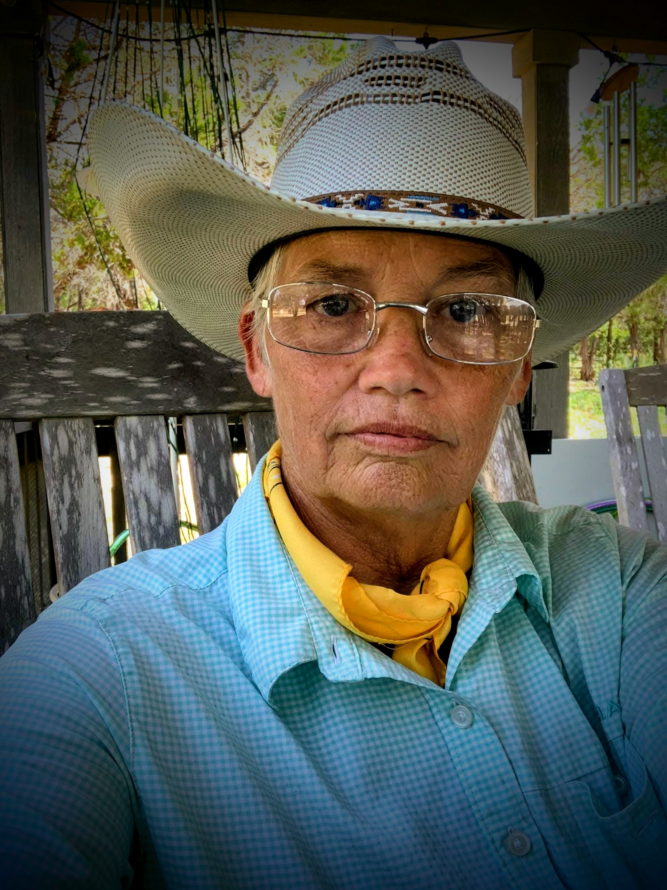

WC
1873–1947
Willa Cather
Cather transformed her Nebraska experiences into enduring literature about prairie settlement, migration, place, and belonging.
Begin with: O Pioneers!, My Ántonia, and Death Comes for the Archbishop.
A community dedicated to recognizing female Western authors, sharing thoughtful non-paid reviews, and helping readers discover the women preserving and reimagining the American West.
Female Western Authors — Recognition and Reviews was founded in 2020 for a clear purpose: to Recognize and Review Female Western Authors.
With more than 2,000 members, the community brings readers and writers together around the fiction, history, memoir, poetry, ranch life, and regional stories that keep the West alive on the page.
Female Western Authors — Recognition & Reviews was created to give women writing Western stories, history, memoir, poetry, and regional literature a stronger place to be discovered and discussed.
Our focus remains simple: recognize female Western authors, provide thoughtful non-paid reviews, and build a welcoming community of readers and writers who value the literature of the American West.
As the organization grows, leadership announcements and officer biographies will be added here.
More member features, reviews, and author recognitions are being added as the site develops.
Our reading archive begins with established authors whose work gives readers a strong foundation in Western and frontier literature.
Cather transformed her Nebraska experiences into enduring literature about prairie settlement, migration, place, and belonging.
Begin with: O Pioneers!, My Ántonia, and Death Comes for the Archbishop.
Born in Nebraska’s Sandhills, Sandoz became a novelist, historian, and major chronicler of the Great Plains and the American West.
Begin with: Old Jules, Crazy Horse, and Cheyenne Autumn.
Johnson grew up in Montana and built a celebrated career writing Western fiction rooted in frontier history, folklore, and character.
Famous stories: “The Man Who Shot Liberty Valance,” “A Man Called Horse,” and “The Hanging Tree.”
Wilder drew on her own pioneer experiences to create the Little House books, preserving an accessible literary record of family life during westward expansion.
Begin with: Little House on the Prairie and continue through the series.
These authors illustrate the breadth of today’s Western writing—from Texas storytelling and Colorado historical fiction to Southwestern mysteries and Arizona frontier sagas.

BJ Stone is a Western author, ranch camp host, lifelong horsewoman, and mule rider whose writing draws on decades of firsthand experience with horses, mules, ranch life, and the people and places of Central Texas.
Her work combines documentary history, personal experience, and a deep interest in preserving Western stories before they disappear.
Author focus: Western history, ranch life, equine experience, documentary storytelling, and the preservation of regional heritage.
A Texas-centered novelist whose stories span past and present, Thomas has published more than sixty novels and has been recognized by the Texas Literary Hall of Fame.
Explore: her Texas-set historical and contemporary series.
A Colorado author of historical fiction and nonfiction whose work frequently draws on the Rocky Mountain West, community, survival, and women’s lives.
Explore: Westering Women, Tallgrass, and The Last Midwife.
A bestselling mystery writer whose novels continue the Navajo detective world created by Tony Hillerman, with Bernadette Manuelito at the center of much of her work.
Explore: Spider Woman’s Daughter and the Leaphorn/Chee/Manuelito mysteries.
A Texas-born, Arizona-based novelist known for frontier fiction centered on women’s lives, family, survival, and the territorial Southwest.
Explore: These Is My Words, Sarah’s Quilt, and The Star Garden.
Bertha Muzzy Bower was an early mass-market Western novelist whose fiction drew heavily on ranch life and the open-range culture of Montana.
Explore: Chip of the Flying U and her long-running body of Western fiction.
Mourning Dove was an Indigenous author from the Pacific Northwest whose work preserved tribal stories and brought a Native woman’s voice into early twentieth-century literature of the West.
Explore: Cogewea, the Half-Blood and collections of her traditional stories.
A bestselling author of historical and contemporary fiction, Miller has written more than one hundred novels, many reflecting her lifelong connection to the West.
Explore: her McKettrick, Creed, and other Western family series.
A Texas author of historical romance whose novels are rooted in nineteenth-century Texas and combine Western settings with humor, adventure, and faith.
Explore: her Texas-set historical romances, including If the Boot Fits.
Use these titles as an introductory trail through prairie literature, Great Plains history, Montana short fiction, pioneer memoir-inspired fiction, Colorado historical fiction, and Arizona frontier storytelling.
Some authors remind us of the qualities that made the classic Western masters unforgettable. These recognitions celebrate shared literary strengths—not imitation—and give readers another way to discover female authors whose work stands in a familiar Western tradition.
For a female Western author whose writing is especially strong in sweeping landscapes, frontier conflict, romance, moral struggle, and the dramatic pull of the open West.
Recognition looks for: vivid Western settings, adventure, emotional stakes, memorable frontier characters, and a strong sense of place.
For a female Western author whose work reflects fast-moving storytelling, strong character, survival, honor, perseverance, and practical knowledge of Western life.
Recognition looks for: authentic detail, action, courage, family or community loyalty, and highly readable storytelling.
For a female author whose Western writing explores difficult choices, human character, frontier morality, and the lasting consequences of decisions.
Recognition looks for: psychological depth, restraint, strong short-form or novel storytelling, and characters who remain with the reader.
For a female author whose work gives unusual power to landscape, memory, migration, community, and the emotional meaning of Western place.
Recognition looks for: literary depth, evocative landscape, heritage, belonging, and the relationship between people and the land.
For a contemporary female author who blends classic Western values and storytelling with a distinctly modern voice, perspective, setting, or subject.
Recognition looks for: originality, strong Western identity, contemporary relevance, and respect for the genre’s storytelling roots.
Readers and members may nominate a female Western author whose writing strongly evokes a classic Western storytelling tradition.
Our scope reaches across the many ways women tell the story of the West.
Traditional Westerns, frontier fiction, ranch stories, family sagas, historical romance, and stories shaped by Western landscapes and communities.
Regional history, biographies, documentary works, family histories, community histories, and books preserving people or places of the American West.
Memoir, horsemanship, ranching, rural life, cowboy and cowgirl culture, trail stories, and firsthand accounts of Western experience.
Mysteries, suspense, and adventure stories whose characters, setting, or history are substantially connected to the West.
Poetry, essays, short stories, and literary writing that explore Western identity, landscape, heritage, work, and memory.
Age-appropriate fiction and nonfiction that introduce younger readers to Western history, culture, animals, landscapes, and adventure.
Reviews should help readers understand a book—not function as purchased praise.
No author pays for a favorable review or recognition feature. Payment is not a condition of consideration.
Reviews can consider storytelling, character, historical grounding, sense of place, readability, originality, and contribution to Western literature.
If a complimentary review copy, personal connection, sponsorship, or other relevant relationship exists, it should be disclosed.
This growing directory brings heritage voices and contemporary Western writers together in one easy place to explore.
Early mass-market Western fiction • Montana ranch life
Prairie literature • Migration • Place
Historical fiction • Colorado • Women’s lives
Southwestern mystery • Navajo detective fiction
Montana • Frontier short fiction
Historical & contemporary Western fiction
Indigenous stories • Pacific Northwest
Great Plains history • Biography • Fiction
Western history • Ranch life • Equine experience
Texas historical & contemporary fiction
Arizona frontier fiction
Texas historical Western romance
Pioneer literature • Family history
Members and readers can suggest another female Western author or title for consideration using the submission form below.
Authors, readers, publishers, historians, libraries, and book clubs may suggest female Western authors and titles for consideration, including nominations for one of our Literary Tradition Recognitions.
There is no review fee.